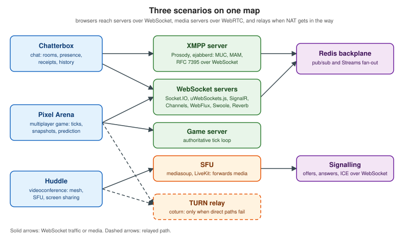

WebRTC & WebSockets
|
This content was generated with the assistance of AI and should be verified against the official documentation before being relied on in production. |
This section teaches how to build three kinds of real-time web application: a chat application, a videoconference application and a multiplayer browser game. It is written for web and backend developers who know HTTP and JavaScript and now need persistent connections, peer-to-peer media or low-latency state synchronisation, and who want to compare several server stacks on equal terms. Every concept has its own page with detailed explanations and runnable examples, and every example is followed by a link to the official documentation it derives from.
Versions and standards were re-checked on 2026-10-24 (the first survey was done on 2026-10-22). The baseline is:
WHATWG WebSockets living standard with RFC 6455, RFC 7692, RFC 8441 and RFC 9220; WebSocketStream shipped only in
Chromium 124 and later and not on a standards track; WebTransport as a W3C Candidate Recommendation Snapshot of
2026-07-30, supported in Safari 26.4 and later; the W3C WebRTC 1.0 Recommendation (2025-03-13 edition) with JSEP in
RFC 9429 and WHIP in RFC 9725 (WHEP is still an Internet-Draft); mediasoup 3.31.0, LiveKit 1.13.10, Janus 1.4.3, Pion
4.2.25, aiortc 1.15.0, coturn 4.18.0 and eturnal 1.12.3; ejabberd 26.09, Prosody 13.0.7, Openfire 5.1.2 and MongooseIM
6.10.0; ASP.NET Core 10.0.13 (LTS) with .NET 11 still in release-candidate state; socket.io 4.8.4 and python-socketio
5.17.0; uWebSockets.js v20.71.0; channels 4.3.2; Spring Framework 7.0.10 and Spring Boot 4.1.2; Atmosphere 4.0.76;
Swoole 6.2.3 and OpenSwoole 26.2.0; and Laravel Reverb 1.12.0 on Laravel 13. Each page restates the versions it was
written against.
The three scenarios
Every page uses one of three original scenarios, so that the stacks and techniques can be compared on the same problem.
-
Chatterbox is a chat application with rooms (public, private and direct messages), presence, typing indicators, delivery and read receipts, paginated history, edits, reactions, attachments, moderation and offline catch-up. All server-stack pages implement the same JSON wire protocol (an envelope with
v,type,id,room,tsandpayload), so one browser client can talk to every server. An XMPP variant offers the same features on Prosody or ejabberd. -
Huddle is a videoconference application with 1:1 calls and rooms, a lobby, mute and camera toggles, device switching, screen sharing, active-speaker detection, chat over a data channel, recording and optional end-to-end encryption. It uses a WebSocket signalling server, a mesh mode for up to four participants, an SFU mode with mediasoup, a LiveKit variant and coturn with ephemeral credentials.
-
Pixel Arena is a multiplayer browser game with an authoritative server, a fixed tick loop, snapshots, client-side prediction, reconciliation, interpolation, lag compensation and unreliable data channels, plus a Colyseus variant and a binary snapshot encoding compared with JSON.

What’s covered
Foundations
The protocols and browser APIs underneath every real-time application.
| Page | What it covers |
|---|---|
Latency budgets, the three application types and the transports compared: polling, long polling, SSE, WebSocket, WebRTC, WebTransport and XMPP. |
|
TCP and UDP, HTTP/1.1, HTTP/2, HTTP/3 and QUIC, TLS, NAT, ports and proxies as they matter to real-time apps. |
|
RFC 6455 handshake, framing, masking, opcodes, ping and pong, close codes, subprotocols, permessage-deflate, and WebSocket over HTTP/2 and HTTP/3. |
|
The WHATWG WebSocket API, its events, bufferedAmount, binaryType, and WebSocketStream with feature detection. |
|
EventSource, the text/event-stream format, Last-Event-ID, long polling and when they beat WebSockets. |
|
The Chatterbox JSON envelope shared by every server page, client-generated IDs, and JSON versus binary encodings. |
|
Reconnect with backoff and jitter, heartbeats against idle timeouts, and resuming a session. |
|
The WebTransport API, its standards status, browser support and Media over QUIC as an emerging specification. |
WebSocket Servers
The same Chatterbox protocol implemented on eight server stacks.
| Page | What it covers |
|---|---|
A comparison of the eight server stacks and the other WebSocket pages on this site, with a decision flow. |
|
The Node.js server and browser client: rooms, namespaces, acknowledgements, connection state recovery and the Redis adapter. |
|
Engine.IO and Socket.IO protocols, transports and clients in other languages. |
|
The Python Socket.IO server on ASGI and WSGI, and the Redis client manager. |
|
The uWebSockets.js server: behaviours, built-in pub/sub, backpressure, limits and licensing. |
|
Chat, presence and game-loop patterns built on top of the existing Channels reference. |
|
ASP.NET Core SignalR hubs, groups, streaming, reconnect, authentication and scale-out. |
|
Reactor handlers, broadcasting with Sinks, security and testing, contrasted with Spring MVC STOMP. |
|
The Atmosphere 4 framework: managed services, broadcasters, transport fallback and clustering. |
|
The Swoole WebSocket server: process model, coroutines, shared state and OpenSwoole differences. |
|
The Reverb server and Echo client for chat, presence and game use, and scaling. |
WebRTC
Capture, peer connections, NAT traversal, data channels and media servers.
| Page | What it covers |
|---|---|
How capture, signalling, ICE, DTLS-SRTP and the browser APIs fit together. |
|
getUserMedia, constraints, device enumeration and switching. |
|
getDisplayMedia, its options and limits. |
|
RTCPeerConnection, JSEP, transceivers and an SDP walkthrough. |
|
A WebSocket signalling server and the perfect negotiation pattern. |
|
NAT traversal, candidates, ephemeral TURN credentials, coturn and eturnal. |
|
Data channel options for chat and games, flow control and file transfer. |
|
Codec negotiation, simulcast encodings and scalable video coding. |
|
getStats, quality metrics and bandwidth estimation. |
|
MediaRecorder, insertable streams and processing media in the browser. |
|
Encoded transforms, SFrame and key management through an SFU. |
|
Comparing mesh, SFU and MCU topologies. |
|
The mediasoup SFU: workers, routers, transports, producers and consumers. |
|
The LiveKit SFU, its SDKs, tokens and deployment. |
|
The Janus gateway and the Jitsi Meet stack. |
|
Building WebRTC peers in Go with Pion and in Python with aiortc. |
|
Ingest and playback over WebRTC and the contrast with HLS and DASH. |
XMPP
The federated chat protocol, its servers, browser clients and chat extensions.
| Page | What it covers |
|---|---|
Architecture, JIDs, streams and the three stanzas. |
|
ejabberd, Prosody, Openfire and MongooseIM with Compose files. |
|
XMPP over WebSocket (RFC 7395), BOSH, Strophe.js and @xmpp/client. |
|
MUC, MAM, Carbons, Stream Management, receipts, markers, corrections, reactions, HTTP upload and push. |
|
Embedding and customizing the Converse.js web client. |
|
End-to-end encryption in XMPP with OMEMO. |
|
Jingle signalling for calls and how Jitsi Meet uses XMPP. |
Building Applications
Architecture and end-to-end builds of the three scenarios.
| Page | What it covers |
|---|---|
Components, data model and message flow of a chat system. |
|
Presence, typing indicators and delivery and read receipts. |
|
History pagination, offline catch-up and moderation. |
|
The end-to-end Chatterbox build. |
|
Rooms, signalling, topologies and media services for a videoconference. |
|
The end-to-end Huddle build. |
|
Authoritative servers, tick loops and snapshots. |
|
Client-side prediction, reconciliation, interpolation and lag compensation. |
|
Game server frameworks, with Colyseus. |
|
The end-to-end Pixel Arena build. |
Production
Authentication, security, scaling, observability, testing and capacity.
| Page | What it covers |
|---|---|
Tokens, tickets, cookies and per-message authorization. |
|
Origin checks, CSWSH, limits, wss, TURN abuse and SRTP. |
|
Sticky sessions and backplanes. |
|
nginx, ingress and load balancer settings. |
|
Scaling SFUs and TURN servers. |
|
Metrics, logs and traces for real-time systems. |
|
Unit, integration and browser tests. |
|
Load testing tools and capacity planning. |
|
Mobile and native clients for real-time backends. |
Reading path
I want to build a chat app. Start with Real-Time Web Overview, The WebSocket Protocol and Message Design and Serialization. Pick a server with Choosing a WebSocket Stack and its stack page, then read Chat Architecture, Presence, Typing and Receipts and History, Offline Delivery and Moderation before the end-to-end Building a Chat App. If you prefer a federated, standards-based protocol, take the XMPP Fundamentals path instead.
I want to build a videoconference app. Start with WebRTC Architecture, Media Capture and Devices, Peer Connections and SDP, Signaling and Perfect Negotiation and ICE, STUN and TURN. Then read Topologies: Mesh, SFU and MCU, an SFU page (mediasoup or LiveKit), Videoconference Architecture and the end-to-end Building a Videoconference App.
I want to build a multiplayer game. Start with The WebSocket Protocol, Data Channels and Multiplayer Game Architecture, continue with Latency Compensation and Game Servers and Colyseus, and finish with the end-to-end Building a Multiplayer Game.
Whatever you build, finish with the Production pages, starting with Authentication and Authorization and Security, and use the Comparison & Decision Guide and the Cheat Sheet (PDF) as quick references.
Related material on this site
This section documents the real-time angle only. The pages below cover the rest of each framework or technology, and the section links to them instead of repeating them.
Bibliography
Every source below is the official site, repository or documentation page of the library, service or standard it supports. Versions, release status and draft status change often in this area, so check the linked page for the current state before you rely on a version or status stated in this section.
Books and long-form guides
The following freely available or publisher-hosted works were consulted for structure and concepts. They are not the primary source for any code example; where they differ from the official documentation, the official documentation wins.
-
Ilya Grigorik, High Performance Browser Networking: WebSocket. It predates RFC 8441, RFC 9220, Unified Plan and the current JSEP RFC.
-
Saint-Andre, Smith and Tronçon, XMPP: The Definitive Guide (O’Reilly, 2009). A historical reference: it predates XMPP over WebSocket, MAM, Carbons, Stream Management, HTTP Upload, OMEMO and SASL2, Bind2 and FAST.
WebRTC specifications (IETF)
Additional IETF specifications
RFCs and Internet-Drafts cited by individual pages for transport, security, real-time media and XMPP details.
-
RFC 5104: Codec Control Messages in the RTP Audio-Visual Profile with Feedback
-
RFC 6062: Traversal Using Relays around NAT (TURN) Extensions for TCP Allocations
-
RFC 6465: RTP Header Extension for Mixer-to-Client Audio Level Indication
-
RFC 7065: Traversal Using Relays around NAT (TURN) Uniform Resource Identifiers
-
RFC 7301: TLS Application-Layer Protocol Negotiation Extension
-
RFC 7587: RTP Payload Format for the Opus Speech and Audio Codec
-
RFC 7936: Clarifying Registry Procedures for the WebSocket Subprotocol Name Registry
-
RFC 8259: The JavaScript Object Notation (JSON) Data Interchange Format
-
RFC 8260: SCTP Stream Schedulers and User Message Interleaving
-
RFC 8265: Preparation - Enforcement and Comparison of Internationalized Strings (PRECIS)
-
RFC 9449: OAuth 2.0 Demonstrating Proof of Possession (DPoP)
-
IETF Internet-Draft: RTP Extensions for Transport-wide Congestion Control
-
IETF: RTP Payload Format for HEVC in WebRTC (draft-ietf-avtcore-hevc-webrtc)
-
IETF: WebTransport Protocol Framework (draft-ietf-webtrans-overview)
-
Internet-Draft: A Google Congestion Control Algorithm for Real-Time Communication (expired)
-
draft-uberti-behave-turn-rest-00: A REST API For Access To TURN Services
Open-source projects and packages
Repositories and package registry pages of the libraries, servers and clients the examples use.
Other official documentation and articles
Individual documentation pages, specifications and articles cited by pages, each from the official site of its subject.